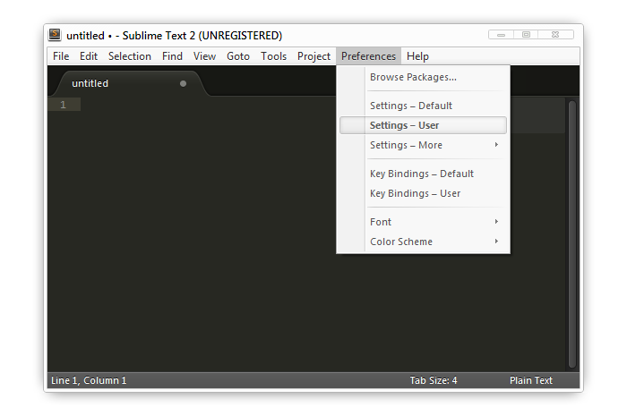

前言
在网上搜索了一圈，发现网上的很多制作网页的所谓教程是咸丰年前的内容，虽然依旧可用，但是对于很多初学者来说其真是不宜去理解，所以我就决定写一篇简单易懂的教程，用一些简单通俗易懂的文字介绍 HTML 和 CSS，去除很多「废话」（书面语）。
其实我这篇文章的最大期望是中学生甚至小学生都能看懂并学习了解如何制作一个简单的网页的。
我一直都觉得 HTML 和 CSS 应该是任何电脑课程都应该教的计算机基础知识！因为在网络上，无论你是写博客还是写评论都是需要使用一定量的 HTML 作为编写的，你要分别标记内容和设置基本样式需要使用到的知识，而 CSS 是控制网页排版、样式等，也就是说 HTML 和 CSS 就是网页上的写作基础知识，如同你写作文之前除了学会写字还需要学会什么是分段，什么是标点符号一样。
但是实际上很多编写教学书籍的都......你们懂的。
在开始学习制作一个网页之前，你必须有一定的电脑计算机基本操作知识，你要懂得如何在网上下载东西和怎样在电脑上安装软件等。
那么让我们来学习如何制作一个简单的网页吧！
准备工作
开始学习之前必须确保你电脑上的网页浏览器不能太落后！
什么是网页浏览器？
网页浏览器就是你们上网浏览网页时候使用的软件。
维基百科的介绍
网页浏览器（Browser），是个显示网站服务器或文件系统内的文件，并让用户与此些文件交互的一种应用软件。它用来显示在万维网或局域网等内的文字、图像及其他信息。这些文字或图像，可以是连接其他网址的超链接，用户可迅速及轻易地浏览各种信息。大部分网页为HTML格式，有些网页需特定浏览器才能正确显示。
那么我们要怎么确保你的浏览器不落后呢？
只要你的软件不是下图其中一个就可以了!
要是不幸你用的浏览器是上图其中一个怎么办？
你只需要下载安装下面三款浏览器软件中其中一款就可以了！


打开对应的网页，点击下载（Download）即可下载浏览器安装程序。安装完成之后会弹出提示你是否将改浏览器设置为默认浏览器，这时候只要点击「是」即可。
为什么要安装这些浏览器呢？
因为只有新的浏览器才能标准的显示网页内容！落后的浏览器并不能正确的显示网页内容！
编辑软件
开始学习之前我们要安装一个方便使用的编辑器，这样才能有效的制作！ 推荐安装 Sublime Text，这是一个强大的代码编辑器，特别对于刚开始学习的朋友更加容易上手使用，而且无时间限制的试用，不过当你保存次数达到一定次数的时候会弹出一个购买提示窗口。
和其他软件一样，只要在网页中下载好双击打开安装然后不断下一步（NEXT）就可以了。Sublime Text 的下载页面是列出了苹果电脑1、普通 PC2 和 Linux3 三种电脑系统的软件版本下载连接，你只要选择你所使用的系统4对应连接下载即可。

打开浏览器我们先在顶部菜单拦中选择 Preferences -> Settings - User 打开软件设置文件，将下面的代码替换进去然后按 Ctrl+S 保存。也就是将下面的代码覆盖了这只文件里面的内容。
{
"draw_centered": true,
"font_face": "Courier New",
"word_wrap": true
}
"draw_centered": true 設置內容居中，代碼寬度較少時候能將視線集中到屏幕中間不用斜看左邊。
"font_face": "Courier New" 將字體設置成 Courier New 是因為這款是相當好的襯線體。
"word_wrap": true 自動換行，免去內容超寬時候需要拖動操作范偉。
关于 Sublime Text 的更多使用说明可以浏览 @ChingHanHo 制作的 Sublime Text 手冊。
最简单的网页
开始制作，首先把鼠标移动到 Sublime Text 右下角 "Plain Text" 点击展开菜单，然后选择 "HTML" 把文件格式设置成网页格式。将下面的代码复制到编辑器中，然后按 Ctrl+S 保存一个 ".html" 格式的文件到任意一个文件夹中。
<!DOCTYPE HTML> <html lang="zh"> <head> <meta charset="UTF-8"> <title>一个简单的网页</title> </head> <body> 我们都来做个简单的网页吧！ </body> </html>
保存后将文件拖放到上面安装的浏览器中或者双击打开，这样就完成了一个最简单的网页了。
上面我们已经制作了一个最简单的页面了，看到这些代码你是否已经知道网页的标题和网页窗口中的内容是哪里了呢？
HTML 标签和语法（规范）
在我们解析上面代码之前先来说一下 HTML 的标签和语法吧！
标签
标记网页中元素的一串文字和符号。正式的解释可以参考 维基百科。网页中的内容就是通过各种标签组成不同的元素，浏览器就会按照标签的特性给不同标签中的内容显示不同的效果。
不同的标签有不同的特性，就像我们班级里面有班长、副班长、学习委员等而每组也有组长，不同的职位会要负责对应不同的任务。
<div>我是标签里面的内容</div> <a href="//www.google.com">Google</a> <input type="text" value="我是显示的内容">
上面代码第一行是简单的 HTML 标签，他是由英文尖括号（不能使用中文尖括号！！！）括起一个单词或字母而组成的句子，并且有开头和结尾部分，开头部分是直接使用尖括号把单词括起 <div>，结尾部分是在尖括号中的单词前面加上一个斜线 </div>，两个尖括号之间包含的文字则是显示到网页上的文字「我是标签里面的内容」。
语法
语法就是代码中的写作规范，任何计算机使用的代码都有自己的写作规范来告诉计算机你写的代码是什么意思。